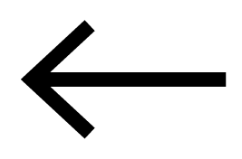

Mateo Van Thienen
"Los dibujos de Mateo se guían por cuatro pilares: paciencia, espontaneidad, imaginación y detalle. Son dibujos minuciosos donde la concentración en el detalle repetitivo hace que la mente del artista entre en un estado semejante al de la meditación y la danza que hacen fluir a su imaginación y que, al mismo tiempo, se plasma sobre el papel de manera espontánea. La minuciosidad de los dibujos toma tiempo, lo que empuja al artista a practicar su paciencia y perseverancia. Los paisajes naturales provienen de la imaginación, y los cuerpos representados en ellos, de autorretratos. Las gotas paisley, cachemira o boteh de estilo persa, características de los movimientos psicodélicos de los años 60, resaltan dentro de los dibujos monocromáticos con un tono amarillo, símbolo de felicidad y alegría, energía y vida."
 Volver
Diseñado con bootstrap por Mateo Van Thienen, 2024.